Instal·lació de l’aula virtual i els contenidors corresponents
Per instal·lar el moodle, és necessari comptar amb una base de dades, i també, per agilitzar l’administració, un entorn gràfic de gestió com PhpMyAdmin. El programari requerit l’instal·larem en contenidors mitjançant Docker. Cada component (Moodle, MariaDB i PhpMyAdmin) anirà dins d’un contenidor diferent. Perquè els contenidors es puguin comunicar entre ells, crearem una Docker network, que consisteix en crear una xarxa interna entre contenidors Docker.
Abans de muntar els contenidors, crearem la Docker Network, de manera que, la comanda, i la seva sortida, es veuran de la següent manera:
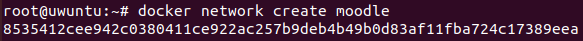
El nom de la nostra xarxa és moodle, i a la sortida de la comanda podem veure l’ID de la xarxa creada.
Amb la xarxa docker creada, procedim a muntar la base de dades:
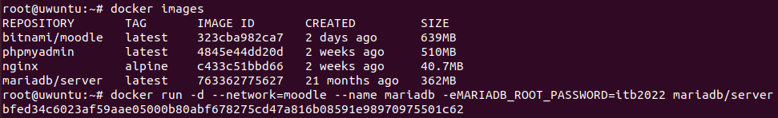
Primerament, llistem les imatges dels contenidors que ens hem baixat anteriorment. Quan tenim la imatge MariaDB localitzada, procedim a executar el container. Amb el paràmetre --name indiquem el nom que li volem donar al contenidor, i amb -eMARIADB_ROOT_PASSWORD indiquem la contrasenya per l’usuari root de la base de dades. Per connectar el contenidor a la xarxa docker creada anteriorment, utilitzem el paràmetre --network=moodle.
Pels contenidor PhpMyAdmin i Moodle seguirem el mateix procediment: Contenidor PhpMyAdmin:
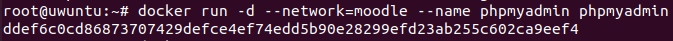
Contenidor Moodle:
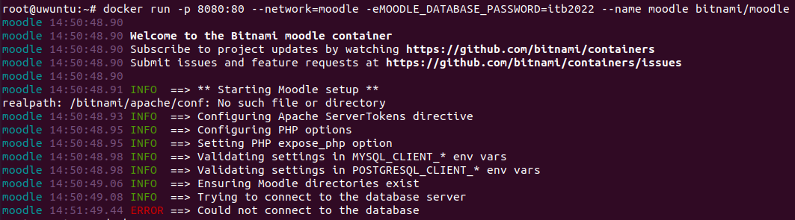
Pel que fa al contenidor moodle, no ens hem de preocupar per l’error mostrat a la línia final, ja que només ens informa de que no s’ha pogut connectar a la base de dades. La connexió entre el moodle i la base de dades la farem més endavant. Si llistem els contenidors que s’estan executant, veiem que els tres components estan en marxa:
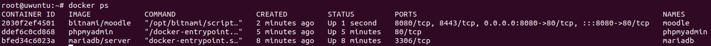
Amb els tres contenidors en funcionament, entrarem a la shell del contenidor mariadb per crear un usuari administrador amb el qual accedirem al phpmyadmin. Per fer-ho, executarem la comanda següent:
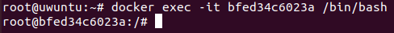
El nombre donat a continuació del paràmetre -it es correspon amb l’ID del contenidor mariadb.
Per crear l’usuari, entrarem al mariadb:
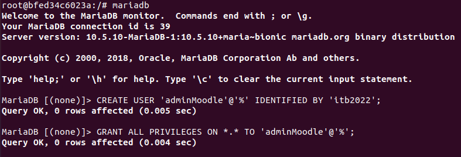
Amb CREATE USER hem creat l’usuari, i amb GRANT ALL PRIVILEGES, hem assignat tots els privilegis a l’usuari creat.
Si accedim a un web browser i naveguem al nostre loalchost, veiem que podem començar la instal·lació de l’aula virtual. Acabada la instal·lació, podem observar l’aspecte del nostre Moodle:
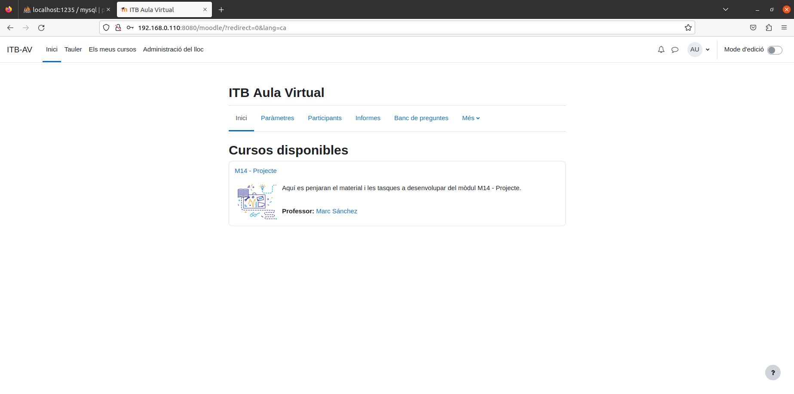
Posteriorment a la instal·lació, hem creat un curs i un usuari professor per administrar el curs.
Creació de certificats per a HTTPS
Creació certificat apache moodle: Un cop tenim una clau rsa dins un arxiu per al moodle podem signar qualsevol arxiu per a certificar l’encriptació de les dades.
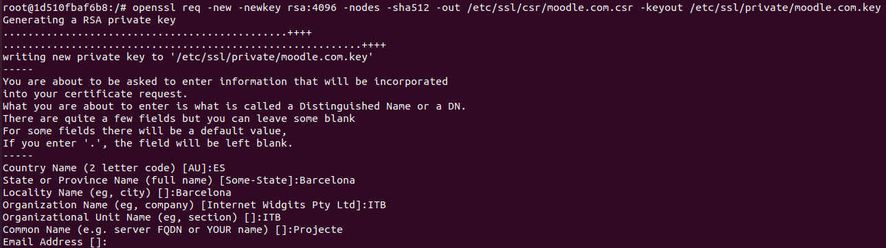
Signem el certificat apache moodle:
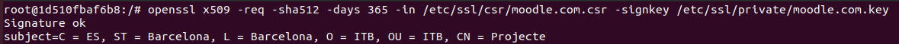
Habilitem el mòdul ssl d’apache:
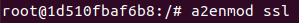
Afegim les rutes cap al certificat SSL en l’arxiu de configuració d’Apache: 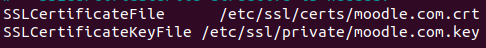